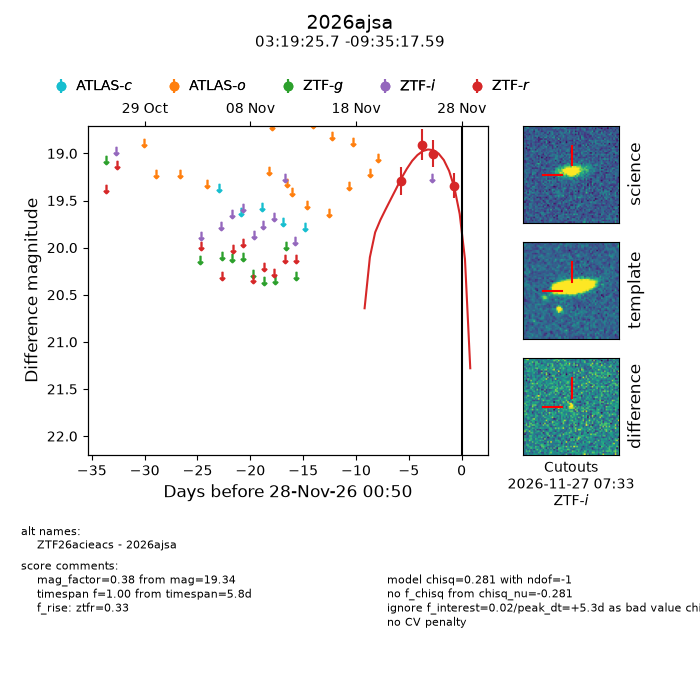
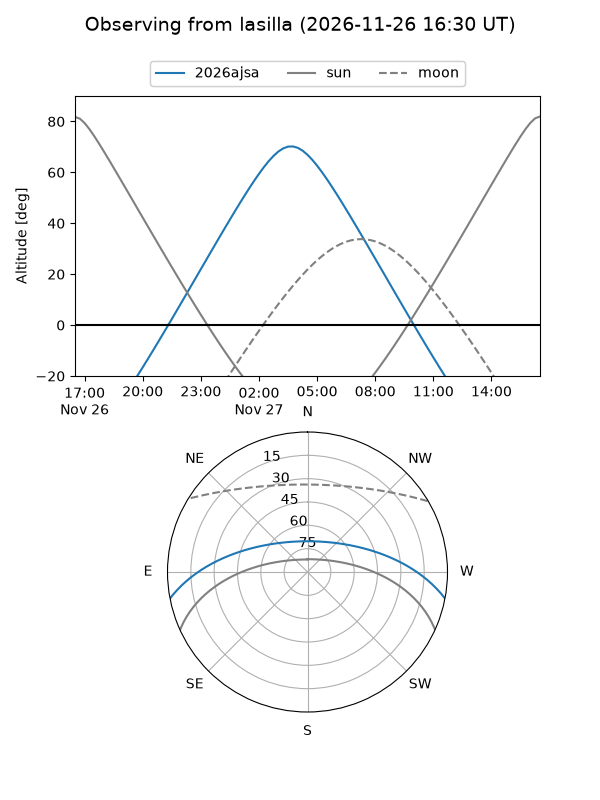
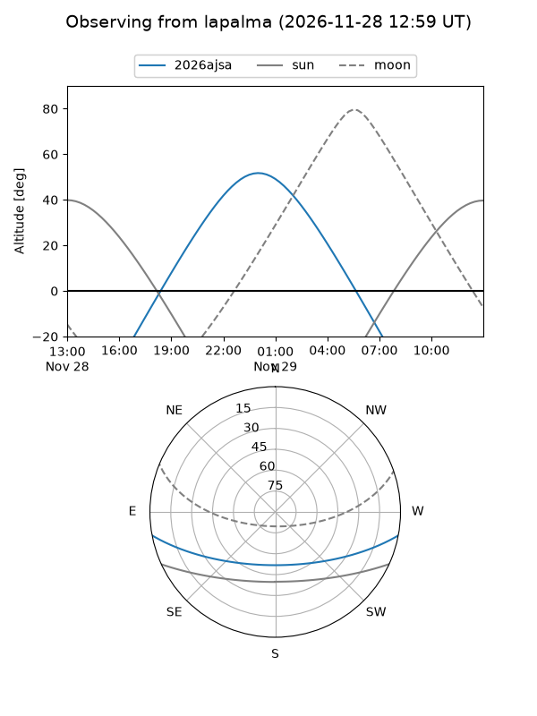
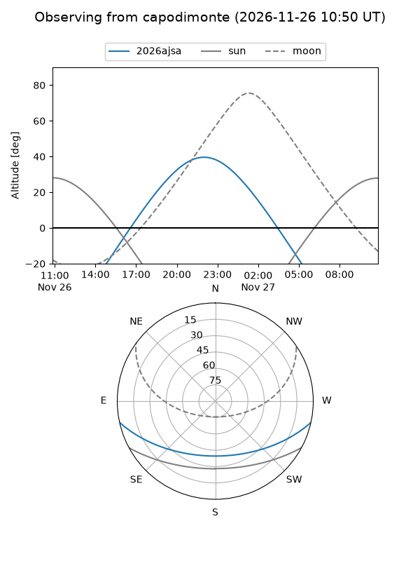
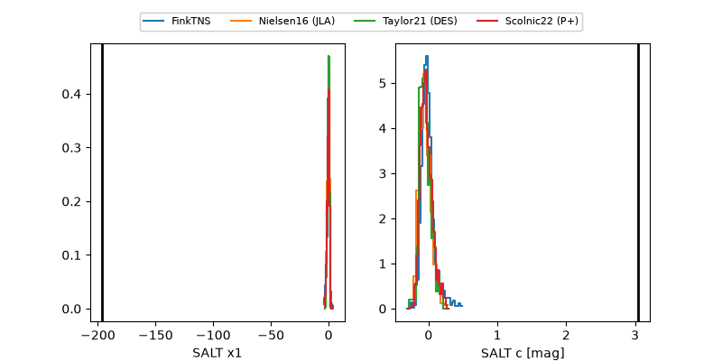

2026ajsa
Target 2026ajsa at 2026-11-28 00:51
Aliases and brokers:
FINK-ZTF: ztf.fink-portal.org/ZTF26acieacs
Lasair-ZTF: lasair-ztf.lsst.ac.uk/objects/ZTF26acieacs
ALeRCE-ZTF: alerce.online/object/ZTF26acieacs
YSE-PZ: ziggy.ucolick.org/yse/transient_detail/2026ajsa
TNS name: wis-tns.org/object/2026ajsa
Direct TNS query: direct search
alt names
ZTF26acieacs (ztf,fink_ztf)
2026ajsa (tns,yse)
Coordinates:
equatorial (ra, dec) = 49.8570,-9.58822
equatorial (HMS+DMS) = 03:19:25.69,-09:35:17.59
galactic (l, b) = (193.3700,-50.97039)
Flags:
peak dt: +5.3
Photometry:
last ztfr=19.34
4 ztfr detections
Lightcurve

Visibility



Additional plots
